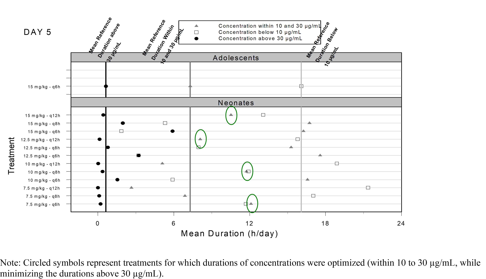

Back in November 2010 the FDA approved Ofirmev (acetaminophen) intravenous injection for use in ages 2 to 16 years for the management of mild to moderate pain and reduction of fever. For more details refer to the Clinical Pharmacology Biopharmaceutics Reviews and to the approval letter . We subsequently published part of the modeling and simulation work in this paper entitled Safety and population pharmacokinetic analysis of intravenous acetaminophen in neonates, infants, children, and adolescents with pain or Fever . In this post, I will cover part of the modeling and simulation analyses and key graphical outputs that were used in the published manuscript and/or ended in the FDA publicly available review.
The FDA drug label clearly mentioned that the approved dosage was based on modeling and simulation: “The pharmacokinetic exposure of OFIRMEV observed in children and adolescents is similar to adults, but higher in neonates and infants. Dosing simulations from pharmacokinetic data in infants and neonates suggest that dose reductions of 33% in infants 1 month to < 2 years of age, and 50% in neonates up to 28 days, with a minimum dosing interval of 6 hours, will produce a pharmacokinetic exposure similar to that observed in children age 2 years and older.” The currently approved dosage is shown below:
One of the key exposure metrics that we needed to understand and balance were the mean durations of how long the PK concentrations would stay below 10 μg/mL, between 10-30 μg/mL and above 30 μg/mL in a 24 hours period:
As seen in the snapshot we simulated 7.5 mg/kg to 15 mg/kg with 2.5 mg/kg increments and varied the dosing intervals from q6h to q12h with 2h increments.
The population PK model for intravenous acetaminophen was a two compartment model with allometric scaling on clearances and volumes and a maturation function on clearance below I reproduce the maturation of clearance versus age manuscript figure 3:
Code
library (tidyr)library (dplyr)require (ggplot2 )library (patchwork)library (ggquickeda)library (ggh4x)library (ggrepel)<- read.csv ("Figure1.csv" )ggplot (Figure1,aes (PNA,CLpopnowt))+ geom_vline (xintercept = c (29 / 4.14 ,26 ,52 ,2 * 52 ,12 * 52 ),linetype= "dashed" ,color= "grey50" )+ geom_line (col= "red" )+ geom_point (aes (y= CLi_noWT))+ annotate ("text" ,x = 29 / 4.14+0.8 , y = 2 ,label= "29 Days" ,color= "grey50" )+ annotate ("text" ,x = 26 , y = 28 ,label= "6 Months" ,color= "grey50" )+ annotate ("text" ,x = 52 , y = 32 ,label= "12 Months" ,color= "grey50" )+ annotate ("text" ,x = 2 * 52 + 17 , y = 2 ,label= "2 Years" ,color= "grey50" )+ annotate ("text" ,x = 12 * 52 , y = 2 ,label= "12 Years" ,color= "grey50" )+ scale_x_log10 (breaks = c (0.1 ,1 ,10 ,100 ,1000 ),labels = c (0.1 ,1 ,10 ,100 ,1000 ),expand = c (0 , 0 , 0 , 0 )+ scale_y_continuous (breaks= c (0 ,10 ,20 ,30 ,40 ),expand = c (0 , 0 , 0.1 , 0 ),sec.axis = sec_axis (~ . / 18.40 ,name = "Ratio" ,breaks = c (0 ,0.25 ,0.5 ,0.75 ,1 ,1.25 ,1.5 ,1.75 ,2 ),labels = c ("× 0" ,"× 0.25" ,"× 0.5" ,"× 0.75" ,"× 1" ,"× 1.25" ,"× 1.5" ,"× 1.75" ,"× 2" )))+ theme_bw ()+ theme (panel.grid.minor = element_blank ())+ annotation_logticks (sides = "bt" ,outside = FALSE ,short = unit (.5 ,"mm" ),mid = unit (1 ,"mm" ),long = unit (2 ,"mm" ))+ coord_cartesian (ylim= c (0 ,40 ),xlim = c (0.1 ,1000 ),clip = "off" )+ labs (x= "Post Natal Age (Weeks)" ,y= "Clearance (L/h/70kg)" )
Below I code the population PK model, simulate and plot PK profiles at Day 5 after and intravenous 15 min of 15 mg/kg q6h and 12.5 mg/kg q4h:
Code
library (mrgsolve)library (data.table)<- ' $PARAM @annotated CL : 18.4 : Clearance CL (L/h) V : 16 : Central volume Vc (L) Vp : 59.5 : Peripheral volume Vp (L) Qp : 97.8 : Intercompartmental clearance Q (L/h) SLPCL : -0.678 : Slope of the maturation function TCL : 41 : Half-life of the maturation function (weeks) ETAVratio : 2.03 : shared eta ratio $PARAM @annotated // reference values for covariate WT : 75 : Weight (kg) PNA : 936 : Age (weeks) $PKMODEL cmt="CENT PER", trans=11 $MAIN double CLi = CL * (1+ SLPCL*exp(-PNA*0.69315/TCL))* pow((WT/75.0), 0.75)*exp(nCL); double V1i = V * pow((WT/75.0), 1)*exp(nVC); double V2i = Vp *pow((WT/75.0), 1)*exp(nQ); double Qi = Qp *pow((WT/75.0), 0.75)*exp(ETAVratio*nQ); $OMEGA @annotated @block nCL : 0.14 : ETA on CL nVC : 0.126 0.38 : ETA on Vc $OMEGA @annotated @block nQ : 0.0383 : ETA on Q $TABLE double CP = CENT/V2i; $CAPTURE CP CLi V1i V2i Qi WT PNA ' <- mcode ("pkmodel2cmt" , pkmodel2cmt)<- setDT (modcovsim@ annot$ data)[block== "PARAM" , .(name, descr, unit)]<- merge (partab, melt (setDT (modcovsim@ param@ data), meas= patterns ("*" ), var= "name" ))#knitr::kable(partab) <- data.table (id= 1 : 2 , WT= c (70.0 ,70.0 ), PNA = c (936 ,936 ))<- ev (id= 1 : 2 ,time = 0 ,amt = c (15 * 70.0 ,12.5 * 70.0 ),cmt = 1 , rate = c (15 * 70.0 / 0.25 ,12.5 * 70.0 / 0.25 ),addl = c (5 * 4 ,5 * 6 ), ii= c (6 ,4 ))<- ev (ev1)<- setDT (as.data.frame (data.dose))<- data.table (idata, data.dose)$ ID<- data.all$ id<- modcovsim %>% data_set (data.all) %>% zero_re () %>% mrgsim (end = 5 * 24 , delta = 0.1 ) %>% %>% <- outputsim %>% filter (time>= 4 * 24 & time <= 5 * 24 ) %>% mutate (time= time-4 * 24 )%>% filter (time<= 12 )%>% select (ID,time,CP)%>% mutate (interval= ifelse (ID== 1 ,"q6h" ,"q4h" ))ggplot (outputsim,aes (time,CP))+ geom_hline (yintercept = c (5 ,10 ,30 ))+ geom_vline (xintercept = c (0 ,0 + 12 ))+ geom_line (alpha = 0.2 , size = 1 ,aes (group= ID,color= interval)) + scale_y_log10 ()+ labs (y = "Plasma Concentrations (mg/L)" , x = "Time (h)" )+ coord_cartesian (xlim= c (0 ,0 + 12 ))+ theme_bw ()
Next we compute the durations of the PK profiles above thresholds of interest using 5 as an example:
Code
<- outputsim %>% group_by (ID,interval) %>% summarize (observations_above_5 = sum (CP >= 5 , na.rm = TRUE )* 0.1 ,observations_below_5 = sum (CP < 5 , na.rm = TRUE )* 0.1 ,AUC = sum (diff (time) * (CP[- 1 ] + CP[- n ()])) / 2
# A tibble: 2 × 5
# Groups: ID [2]
ID interval observations_above_5 observations_below_5 AUC
<dbl> <chr> <dbl> <dbl> <dbl>
1 1 q6h 0.8 11.3 32.1
2 2 q4h 1.2 10.9 40.2
The plot I wanted to reproduce was this one:

At the time, many of today’s tool that we take for granted did not exist, S-plus was still around and the simulation were done in one of my prefered modeling and simulation software of all time: Pharsight’s Trial Simulator. It allowed the simulation of many scenarios on the fly with nice interface and interactive fast simulations. For this post, I digitized the data from the FDA review and reproduced it using today’s tools: ggplot2 and ggforce
Code
library (ggforce)<- read.csv ("durationdata.csv" )$ freq <- factor (durationdata$ freq)$ freq <- factor (durationdata$ freq,levels= c ("q6h" ,"q8h" ,"q12h" ))$ dose <- factor (durationdata$ dose)$ dose <- factor (durationdata$ dose,levels= rev (c ("7.5 mg/kg" ,"10 mg/kg" ,"12.5 mg/kg" ,"15 mg/kg" )))$ type <- factor (durationdata$ type)$ type <- factor (durationdata$ type,levels= c ("below 10" ,"within 10 and 30" ,"above 30" ),labels = c ("≤10 μg/mL" ,"<10 — ≤30 μg/mL" ,">30 μg/mL" ))ggplot (durationdata %>% filter (agegroup== "Neonates" ),aes (time,freq))+ geom_point (aes (shape= type,color= type))+ geom_mark_circle (data= durationdata %>% filter (agegroup== "Neonates" ,== "12.5 mg/kg" ,== "q6h" ,< 6 ),aes (label= "Approved" ),color = "darkgreen" ,con.colour = "darkgreen" )+ geom_vline (data= durationdata %>% filter (agegroup!= "Neonates" )%>% mutate (agegroup= NULL ,dose= NULL ),aes (xintercept = time,linetype= typeshow.legend = FALSE )+ geom_text (data= data.frame (x = durationdata %>% filter (agegroup!= "Neonates" )%>% pull (time),y= - Inf ,label = round (durationdata %>% filter (agegroup!= "Neonates" )%>% pull (time),1 ),dose = factor ("7.5 mg/kg" ,levels= c ("15 mg/kg" ,"12.5 mg/kg" ,"10 mg/kg" ,"7.5 mg/kg" ))),aes (x= x,label= label,y= y),color= "darkgray" ,vjust= 0 )+ geom_text (data= data.frame (x = durationdata %>% filter (agegroup!= "Neonates" )%>% pull (time),y= Inf ,label = c ("Adolescents reference values: \n >30 μg/mL" ,"<10 — ≤30 μg/mL" ,"≤10 μg/mL" ),dose = factor ("15 mg/kg" ,levels= c ("15 mg/kg" ,"12.5 mg/kg" ,"10 mg/kg" ,"7.5 mg/kg" ))),aes (x= x,label= label,y= y),color= "darkgray" ,vjust= 0 ,hjust= 0 ,angle= 0 )+ facet_grid (dose~ .,scales= "free_y" ,switch = "y" )+ theme_bw ()+ theme (strip.placement = "outside" ,strip.text.y.left = element_text (angle= 0 ),axis.title.y.left = element_blank (),legend.position = "bottom" ,plot.title.position = "plot" )+ scale_x_continuous (breaks= c (0 ,6 ,12 ,18 ,24 ))+ coord_cartesian (xlim= c (0 ,24 ),clip = "off" )+ scale_shape_manual (values= c ("square open" ,"triangle" ,"circle" ))+ scale_color_manual (values= c ("black" ,"gray" ,"black" ))+ labs (shape= "PK concentrations" ,color= "PK concentrations" ,title = "Neonates" ,subtitle = "Day 5" ,x= "Mean Duration (h/day)" )+ guides (color= guide_legend (reverse= TRUE ),shape = guide_legend (reverse = TRUE ))
I opted for different decisions on some of the visual aspects e.g. I removed the separate facet for the reference Adolescents as kept the data as reference vertical lines with labels showing their values. I labeled the reference lines without an angle and since we now know what the FDA ended up approving I am encircled it using ggforce::geom_mark_circle.
What would be your take to illustrate duration of time above thresholds to compare dosing regimens? As always, reach out at the LinkedIn Post or github to propose your ideas and to continue the discussion !